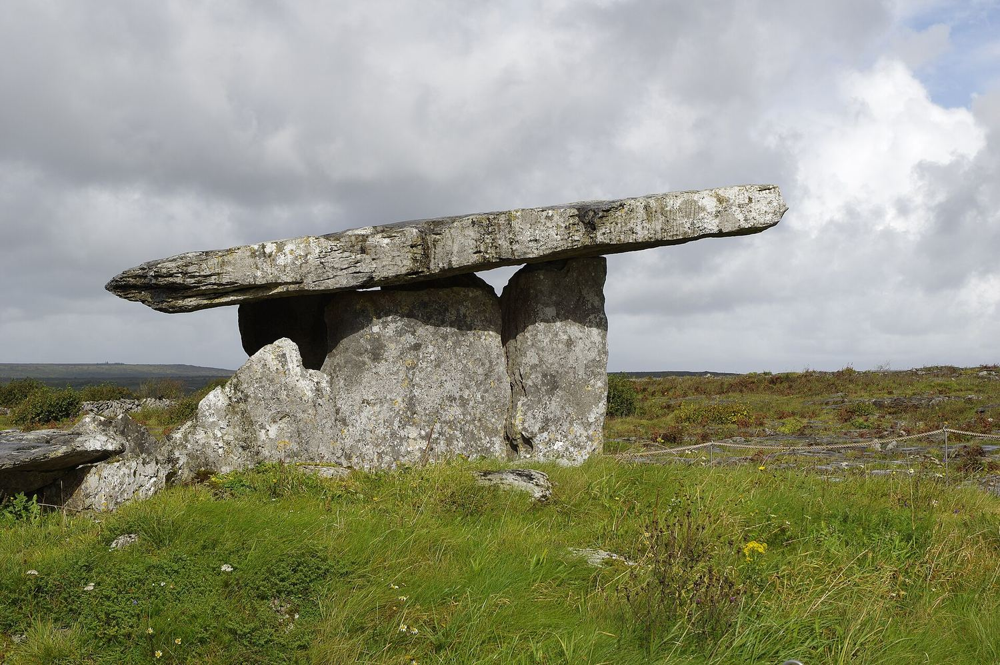
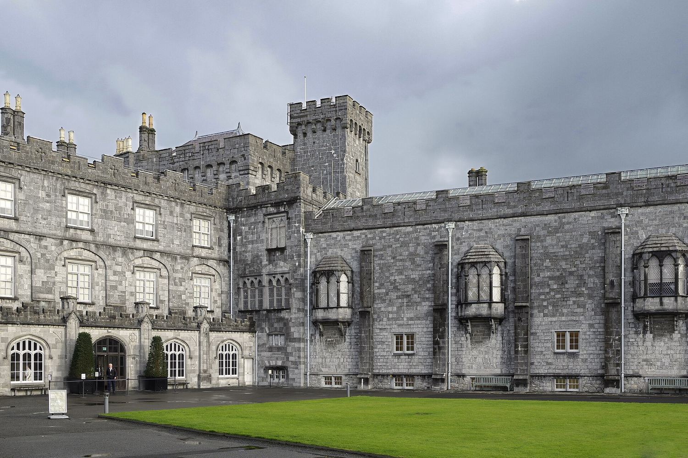
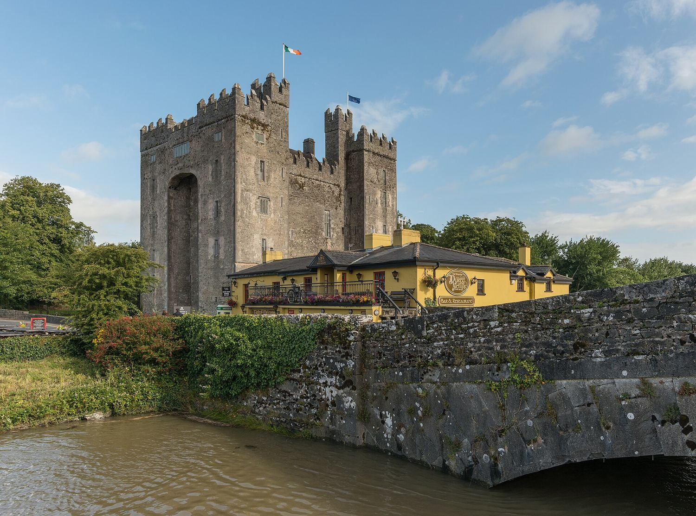
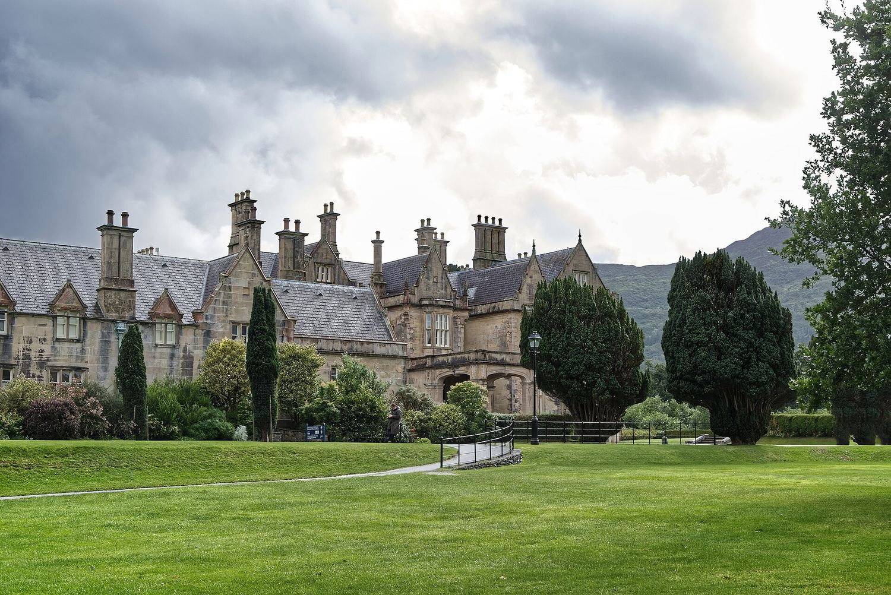

Пять тысяч лет
Наследие
Гробницы старше пирамид, монастырские города, норманнские крепости и георгианские дома. История Ирландии написана в камне — и этот камень стоит до сих пор.
12 мест

Графство Типперэри
Скала Кашел
Резиденция королей Мунстера

Графство Оффали
Клонмакнойс
Монастырский город на Шанноне

Графство Корк
Замок Бларни
Шестьсот лет споров и один камень

Графство Мит
Ньюгрейндж
Старше пирамид и построен ради одного утра в году

Графство Клэр
Дольмен Паулнаброун
Портальная гробница на голом известняке

Графство Антрим
Замок Данлюс
Руина на скале посреди моря

Графство Килкенни
Замок Килкенни
Шестьсот лет одной семьи

Графство Клэр
Замок Бунратти
Последний большой средневековый пиршественный зал

Графство Типперэри
Замок Кахир
Один из крупнейших замков Ирландии

Графство Керри
Дом Макросс
Викторианский особняк посреди национального парка

Графство Уиклоу
Пауэрскорт
Поместье XVIII века и его сады

Графство Дублин
Дублинский замок
Семьсот лет власти в одном дворе